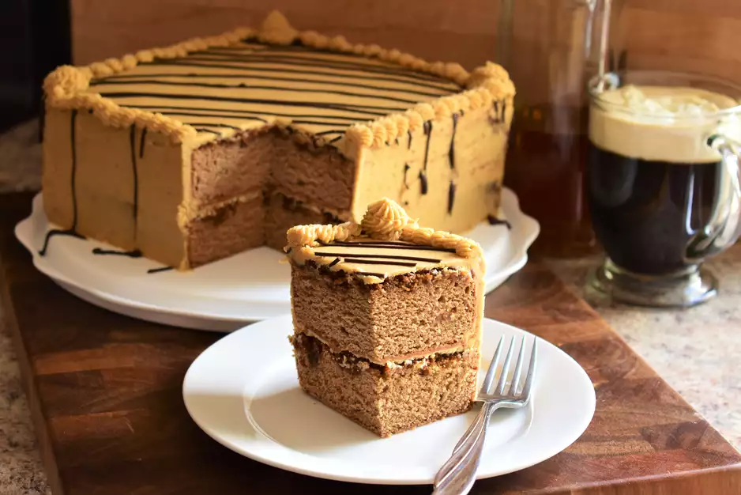

Irish Coffee Cake

Ingredients
- 2 ¼ cups all-purpose flour
- 1 ½ cups white sugar
- 2 ¼ teaspoons baking powder
- ½ teaspoon salt
- 3 (1 ounce) squares unsweetened chocolate
- 3 eggs
- 1 ⅔ cups whipping cream, chilled
- 2 teaspoons vanilla extract
- ½ cup Irish whiskey
- 3 tablespoons instant coffee granules
- 2 tablespoons white sugar
Steps
- Preheat the oven to 350 degrees F (175 degrees C). Grease and flour two 8-inch round cake pans. Place waxed paper over a large wire cooling rack. Place a 3-quart mixing bowl in the freezer.
- Mix flour, 1 1/2 cups sugar, baking powder, and salt together in a bowl.
- Place unsweetened chocolate in the top of a double boiler over simmering water. Stir frequently, scraping down the sides with a rubber spatula to avoid scorching, until chocolate is melted, about 5 minutes. Set aside to cool.
- Beat eggs in a bowl until thick and lemon-colored, about 5 minutes.
- Remove cold bowl from the freezer and pour in chilled whipping cream; beat until stiff. Fold in eggs, melted chocolate, and vanilla extract. Add flour mixture, about 1/2 cup at a time, folding gently after each addition, until blended. Pour into the prepared cake pans.
- Bake in the preheated oven until a toothpick inserted into the center comes out clean, 35 to 40 minutes. Cool in the pans for 10 minutes. Run a table knife around the edges to loosen. Invert layers carefully onto the prepared cooling rack and let cool completely, about 30 minutes. Poke holes in the top of the cakes with a skewer or long-tined fork.
- Stir whiskey, coffee granules, and 2 tablespoons sugar together in a small bowl until coffee is dissolved. Pour 1/2 of the coffee-whiskey mixture over each layer. Let stand at room temperature for 30 minutes.
- Meanwhile, combine whiskey and coffee granules for the frosting in a large bowl; stir until coffee is dissolved. Add butter and vanilla extract and beat until combined. Gradually mix in powdered sugar on medium speed until smooth. Transfer 1/2 cup of frosting to a pastry bag fitted with an open star tip (#32 or #4B); set aside. Use the remaining frosting to fill layers and frost sides and top of cake.
- Place chocolate chips in the top of a double boiler over simmering water. Stir frequently, scraping down the sides with a rubber spatula to avoid scorching, until chocolate is melted, about 5 minutes. Allow to cool slightly, then transfer to a small pastry bag fitted with a medium-sized writing tip.
- Pipe chocolate in a lattice design across the top of the cake. Pipe a shell border or rosettes around the top edge.